FMOD Studio User Manual 2.02
- Welcome to FMOD Studio
- FMOD Studio Concepts
- Organizing the Project
- Authoring Events
- Working with Instruments
- Managing Assets
- Parameters
- Getting Events into Your Game
- Mixing
- The Sandbox
- Editing During Live Update
- Profiling
- Dialogue and Localization
- Using Source Control
- Supporting Downloadable and User-generated Content
- Advanced Topics
- Quick Start Tutorial
- Event Macros Drawer Reference
- Instrument Reference
- Plug-in Reference
- Modulator Reference
- Parameters Reference
- Scripting
- Scripting API Reference
- Keyboard Shortcut Reference
- Troubleshooting
- Glossary
- Appendix: Celeste Getting Started Guide
- Appendix: Reaper Integration
9. Mixing
It is important to make sure events in your FMOD Studio project all sit nicely together in terms of volume and the audio spectrum. This is where the FMOD Studio mixer comes into play; in it you can adjust the volume levels on groups of events, as well as create custom mixer views and snapshots.
You can also create return buses for events to share effects and save resources on placing these effects on every event needed.
The mixer window contains tools and features that allow you to set up routing and mix your project, to apply effects to its signal chains, and to define how those effects and that mix can change in response to game events.
In addition, all of these features can be used while connected in real time to your game as it runs.
By default, all events created in your project are routed directly to your project's master bus. The mixer window allows you to supplement your events with group buses and return buses. These buses can then be routed into group buses, and their signal chains can be populated with sends to return buses and effects modules. These features resemble those of hardware mixers.
You can also create snapshots. When active, a snapshot alters the value of any effect property or bus volume scoped into it. Volumes and properties not scoped in to a snapshot are left unchanged, meaning that multiple snapshots can be active at once without overriding each other if they apply to different parts of the project.
9.1 Anatomy of the Mixer
The mixer window is broken up into three main areas:
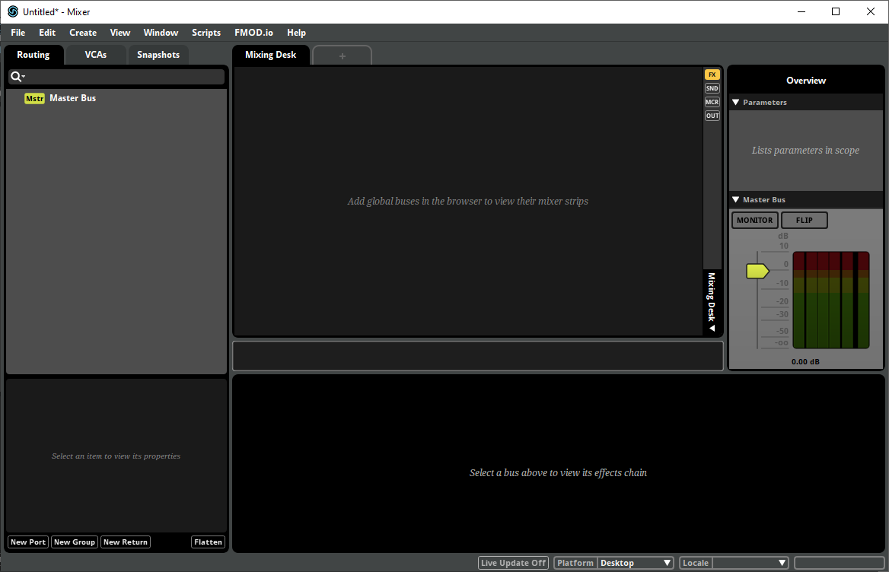
9.1.1 The Mixer Browser
Located at the left-hand side of the window, the mixer browser is used for routing signal path information in the mixer.
Routing Tab
Each event in your project appears in the routing browser, with the exception of nested events. By default these are all routed directly to the master bus for playback output.
Return buses are labeled with a blue "Return" icon, group buses are labeled with a gray "Groups" icon, and events are labeled with the event icon.
To create more buses, right click on an empty space and select "Create Return" or "Create Group" from the context menu.
To route events, buses, and groups, drag them onto other group buses. The top level group bus is a submix of the buses below it, which may have submixes of child group buses and so on.
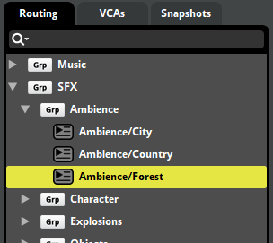
You can also change the routing of groups and returns using the mixer routing window.
For more information, please see the sends and return buses and group buses and routing sections.
VCAs Tab
VCAs are for controlling the volumes of disparate buses that do not share routing.
To create new VCAs, right click in an empty space of the VCAs browser and select "New VCA" from the context menu. To assign group buses, return buses, and other VCAs, drag and drop them from the events browser to the VCA, or right click on the desired bus and select "Assign To VCA" and then your VCA.
For more information, please see the VCA section.
Snapshots Tab
A snapshot is an instanceable unit of changes to the project mix that can be triggered, controlled, and stopped from game code in the same manner as an event. Each snapshot represents a different way your game's mix can change in response to the circumstances in your game as it runs.
To create an overriding or blending snapshot, right click on an empty space and select "New Overriding Snapshot" or "New Blending Snapshot".
For more information, please see the snapshots and the tracks view section.
9.1.2 Mixing Desk
The main section of the mixer window is the mixing desk. This is a simple visual representation of a selection of buses. Buses are displayed as vertical strips (called "mixer strips") to the left of the master bus.
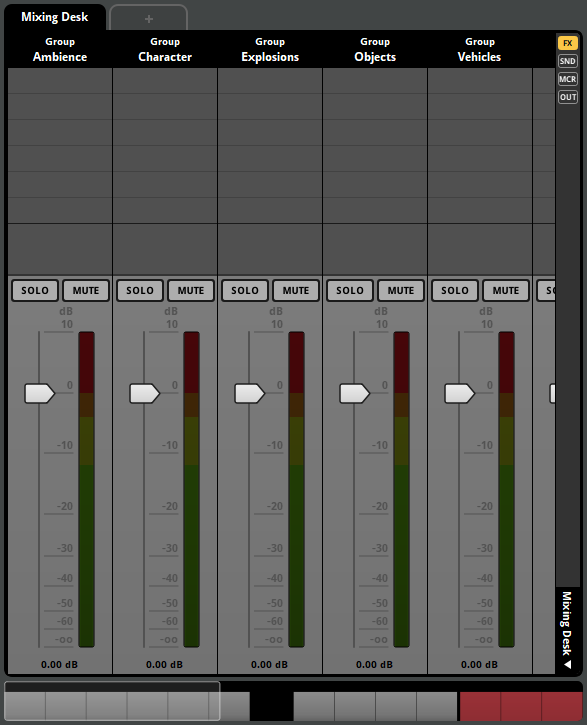
At the top of the mixing desk is a row of tabs. Each tab can display a different mixer view and snapshot. Each tab is labeled with the name of the snapshot it currently displays, or with "Mixing Desk" if it is not currently displaying a specific snapshot.
On the right side of the mixing desk, to the left of the master bus, is the mixing desk sidebar. It contains controls that you can use to change which mixer views and controls are displayed in the mixing desk.
Mixer Views
A mixer view is a collection of mixer strips. Mixer views don't affect the in-game behavior of their content, but are a handy tool for finding and organizing buses in large projects. For example, you could create a mixer view that contains all of a project's character sounds, another for enemy sounds, and a third one for environmental sounds, allowing you to easily recall all the buses associated with those sounds.
To create a new mixer view or change the current mixer view, click on the mixer view drop-down menu at the bottom of the sidebar.
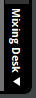
The two mixer views that exist by default are "Mixing Desk" and "Selected Buses." Mixing Desk displays mixer strips for every bus in the project, but not for events. Selected Buses displays mixer strips for every bus and event currently selected in the routing browser.
To add a group bus, return bus, event, or VCA to a custom mixer view, click and drag that bus, event, or VCA from the browser onto the mixing desk while the mixer view is selected. To remove a mixer strip from a mixer view, right-click on the mixer strip, and select "Remove from Mixer View" from the context menu. It is not possible to add or remove mixer strips from the Mixing Desk and Selected Buses mixer views in this fashion.
The bulk of the mixing desk is taken up by the channel strips themselves. Each channel strip is labeled with the type and name of the bus, and includes a slider that controls a property of the bus, by default volume. In addition, every channel strip features "Solo" and "Mute" buttons, described in more detail in the Soloing and Muting Buses section of this chapter.
Control Toggle Buttons
There are four toggle buttons at the top of the mixing desk sidebar, labeled "FX", "SND", "MCR", and "OUT". These buttons control whether the effects, sends, macros, and outputs of buses are displayed on those buses' mixer strips, as described below.
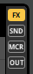
- FX: When enabled, the effects in each bus's signal chain are listed on its channel strip. The toggle button next to each effect name controls whether or not that effect is bypassed.
- SND: When enabled, the sends in each bus's signal chain are listed on its channel strip. As with effects, each listed send has a toggle button that allows it to be bypassed; in addition, each listed send has a number box representing that send's level.
- MCR: When enabled, number boxes for the pitch, max instances, and stealing macro controls of group buses are displayed on their channel strips.
- OUT: When enabled, a dropdown menu is displayed on each channel strip. This dropdown menu indicates and allows you to change which bus the channel strip's bus is routed into.
9.1.3 The Deck
The deck displays the controls of the selected bus.
9.1.4 Overview
The overview is at the right side of the window. It displays a list of parameters, as well as your project's master bus.
The list of parameters includes every parameter used to automate a property within the currently-selected snapshot. If no snapshot is selected, the list instead includes every global parameter in your project.
The master bus is the final bus before the sound is sent to the output device, and the overview displays it much like the mixing desk displays channel strips for other buses. All sounds in an FMOD Studio project eventually pass through the master bus.
The master bus also features "Monitor" and "Flip" buttons. The "Monitor" button toggles "Mute" and "Solo" buttons throughout the project, as described in the Soloing and Muting Buses section of this chapter; and the "Flip" button toggles the property that channel strips' sliders represent, as described in the Signal Chains and Effects section of this chapter.
9.2 Group Buses and Routing
FMOD Studio populates the mixer browser with all events that exist in a project, other than nested events. By default, these events are all routed directly to the master bus for playback output.
If a project requires a further level of control over the output behavior of the signal paths then they can be assigned to specific groups within the mixer view; these groups are called group buses.
A group bus mixes the output of multiple events and buses together, allowing you to apply effects and routing behavior to all the signals within a group.
Any event that is not nested and does not route into a group bus instead routes into the master bus. Each event must route into exactly one group bus or master bus.
To create a group bus, right click in an empty space in the mixer routing browser and choose "New Group" from the context menu.
9.2.1 Master Bus
The master bus creates the final submix of all buses routed to it before outputting audio to the speaker channels. All group buses, return buses, and events not assigned to a group are routed into the master bus.
The master bus combines all buses, allowing for final level adjustments and simpler mastering. The master bus delivers the combined output to the hardware, in the format specified by the project for the given platform.
9.2.2 Bus Instance Limiting
There may be times in your game where there are a lot of events from the same group bus playing at once. It is possible to limit the number of event instances being passed through a group bus.
For example, your game has footstep sound events assigned to soldiers and there is an army on screen. Rather than each of the army's 100 or more soldiers all playing footsteps at once, it would be better for performance and audibility of other events to limit the number of footstep event instances.
When a group bus is selected, there is a group macros drawer on the far right of the deck.
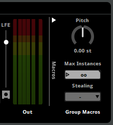
The max instances property sets an upper limit on how many instances of events routed to this bus can play simultaneously. By default, it is set to allow infinite simultaneous instances.
If your game's code attempts to create a new instance of an event, and the number of instances of that event is already equal to the event's max instances property, excess instances are culled according to the event's stealing property. The various stealing behaviors are as follows:
- Oldest: The oldest event instance is immediately stopped and replaced by the new instance.
- Quietest: The quietest existing event instance is immediately stopped and replaced by the new instance. An event instance's 'Quietness' is derived from the volume of the mixer hierarchy, the event's master track volume, and the gain applied to the event by its spatializer effect. The volume settings of the event's audio tracks, nested events, and playing instruments are not taken into account.
- Furthest: Stop the event instance that is the furthest away from the listener, regardless of its volume.
- Off: New event instances are not created when the number of concurrent instances is already equal to the max instances.
9.2.3 Mixer Routing Window
The mixer routing window displays the routing browser and VCAs tab which are also found in the mixer window.
9.2.4 Submixes
A submix is the sound produced in a bus which is the sum of all tracks and return tracks before it reaches the master bus. All changes made to a submix will affect the sound being routed out, whether it is to another bus or the master bus.

In the above screenshot, the Country event is a submix of all the tracks in the event, the Ambience group bus is a submix of the Country and Forest events, and the SFX group bus is a submix of all the return and group buses (and their events) underneath.
9.3 Sends and Return Buses
If you are using a specific effect chain in multiple events or tracks, it may be more effective in both workflow and performance to use sends with a return bus. You can also use group buses in a similar way, however a return bus can provide more flexibility.
9.3.1 Sends
A send duplicates audio signals from the point it exists in the signal chain of a track and sends it to a return track or return bus it is pointing to. The audio being sent is affected by all changes made to the audio before it reaches the send. A send only has a volume control which affects the level of the duplicated signal.

The above screenshot shows the send to the "Reverb" return bus located to the right of the volume fader.
You can adjust the volume being sent to a return bus by adjusting the "Volume" dial on the send.
For sends to a return bus in the mixer, you can open the target return in a mixer window by selecting "Open Target in Mixer" from the context menu.
Sends may be rerouted to send their signal to a different return bus. To reroute a send, right-click on the send and select a return bus from the "Reroute" sub-menu in the context menu.
9.3.2 Returns
A return bus is a special type of bus. It does not allow events or group buses to route into it. Instead you can only send duplicate signals into return buses via a send. This bus then makes a submix of all of these sends and outputs to whichever bus it is routed to. By default, all returns are routed to the master bus.
It is best practice to have all "Dry" properties in effects set to -∞dB and all "Wet" properties to 0dB. This is to ensure that the return bus is only outputting the effect properties on the duplicated signal.
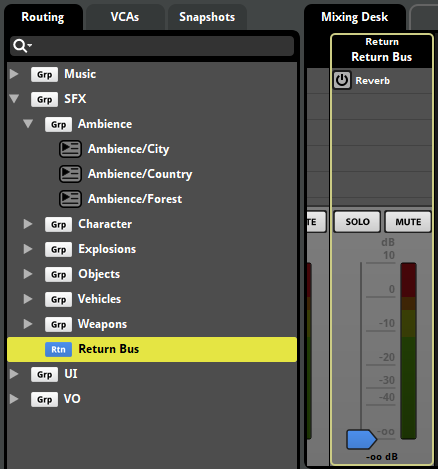
All new FMOD Studio projects have a "Reverb" return bus included.
You can use group buses to a similar effect but a return bus offers much more flexibility. Sends to return buses have a volume control, which alters the volume of the duplicate signal without affecting the original to specific points in an event's signal chain. You can place a send in a variety of places such as the master track of an event, on a specific track or tracks, and even pre-volume fader.
9.4 Port Buses
Some platforms feature support for additional sets of speakers, controller vibration, or other devices that are controlled by audio signals other than those played by the normal speakers, or have special ways of handling specific types of audio. Port buses are buses that allow you to direct some of your project's audio signals to these devices.
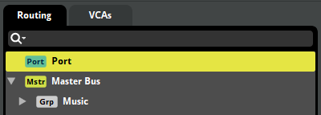
To create a new port, right-click on the routing browser and select "New Port" from the context menu.
Port buses function much like group buses, in that outputs of other buses can be routed into them. However, port buses cannot be routed into other buses, even the master bus, as each port bus's output is instead routed to the device associated with that port bus.
To route an event or bus into a port bus, click and drag it onto that port bus in the routing browser. If you want an event or bus to output a signal to both the group bus and to a port, or to multiple different ports, you can do it by routing a return bus into the port, and adding a send to that return bus to the event or group bus.
When auditioning in FMOD Studio, the output of a port bus is as audible as the output of the master bus, unless the port bus is muted. However, at runtime, the output of a port bus is routed to that port bus's associated device. This means that the output of a port is only audible at runtime if the port bus's associated device is a speaker capable of producing sound.
The types of device that can be associated with a port are determined by the port's type.
| Port type | Purpose | Supported By Platforms |
|---|---|---|
| Music | Music. Certain platforms can automatically duck or replace music output to this port type. | Game Core Xbox One PS4 PS5 |
| Copyright Music | Music. Certain platforms can automatically duck or replace music output to this port type. In addition, certain platforms automatically exclude the output of ports of this type from recordings made using those consoles' built-in tools for recording and streaming gameplay. | Game Core PS4 PS5 |
| Voice | Live audio streams from other players in online games. To route network streams into a port bus of this type, use the FMOD Engine. | PS4 PS5 |
| Controller Speaker | Output to a speaker built into the game's controller. If your game supports the use of multiple controllers simultaneously (presumably to support local multiplayer), you should create one port bus of this type for each controller, and use sends and return buses to route each controller-specific event instance's output to the appropriate port. | PS4 PS5 |
| Personal | Output to controller-specific headphones. If your game supports the use of multiple controllers simultaneously (presumably to support local multiplayer play), you should create one port bus of this type for each controller, and use sends and return buses to route each controller-specific event instance's output to the appropriate port. | PS4 PS5 |
| Vibration | Controller vibration. If your game supports the use of multiple controllers simultaneously (presumably to support local multiplayer), you should create one port bus of this type for each controller, and use sends and return buses to route each controller-specific event instance's output to the appropriate port bus. This functionality can be tested on Windows with a PS5 controller using the Output Device FMOD Controller Output. |
PS5 |
| Auxiliary | Output to auxiliary speakers. Certain platforms support the use of a "social screen" that displays and plays gameplay for an observing audience while the primary audio output (i.e.: the master bus' output) is sent to a VR headset. | PS4 PS5 |
To set the port type of a port bus, select the port bus in the routing browser. Then, in the deck, open the type dropdown menu in the port macros, and select the new type.
Once a port bus's type is set in FMOD Studio, the port's index must be set in the FMOD Engine. Port indices specify which device of each type the port is associated with when a platform supports multiple devices of the same type. Information on port indices can be found in the Platform Details chapter of the FMOD Engine User Manual.
9.5 Bus Volumes
The main component on each bus is the volume fader. These control how loud the submix output is. When a volume fader is set to 0dB, there has been no alteration made to the output.
To bulk edit bus volumes from the mixing desk, make a multi selection by holding either Shift or Ctrl and clicking on buses either in the mixing desk or the routing browser. Once you've made your selection, release the Shift or Ctrl key. Moving one of the volume faders in the mixing desk will move the faders of all the selected buses.
By default, bulk editing volumes will make all volumes the same level. By holding down the Shift key while dragging the faders, you can bulk edit volumes relatively, such that reducing the dragged fader's volume by -2 dB reduces the volume of all selected buses by 2dB.
9.6 VCAs
A VCA (or "Voltage Controlled Amplifier") is a volume property that adjusts the volume of the buses, events, and other VCAs assigned to that VCA. You can assign events and buses to VCAs regardless of their routing, and the value of a VCA can be set by your game's code, meaning that VCAs provide an easy way for your game to adjust the volumes of multiple unrelated buses that do not share routing. VCAs are commonly used to create the volume controls that appear on a game's settings screen, as they can be used to group buses related to sound effects, dialogue, and music.
You can view the VCAs browser in the mixer window in the VCA tab. To create a new VCA, right click on an empty space in the VCAs browser and select "New VCA".
VCAs are also displayed in the mixing desk as mixer strips. Each VCA mixer strip has a volume fader, as well as solo and mute controls.
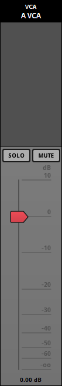
You can assign a bus, event, or VCA to an existing VCA by right-clicking on the item to be assigned in any browser, and selecting "Assign to VCA" from the context menu. Alternatively, you can assign something to a VCA by dragging it onto the VCA in the VCAs browser.
VCAs are not part of the routing chain, but exist alongside it. This means that signals are not routed through VCAs, though VCAs can indirectly affect signals by affecting the buses through which they are routed.
When a bus is assigned to a VCA, the VCA adjusts the final volume of the signal output by that bus, not the volume of that bus' fader. Similarly, when an event is assigned to a VCA, the VCA affects the volume of the signal output by that event, not the volume of its master track's volume fader.
9.7 Soloing and Muting Buses
To solo or mute a bus, click on the "Solo" or "Mute" buttons located on the bus strip.
This is a very useful feature for when you want to make sure a group bus submix is leveling out nicely, or to make sure a return bus has the right amount of an effect mixed in.
Muting a bus will silence that bus. Any sends placed on that bus before the pre-fader (ie. in any child group bus or event, or placed on the bus signal chain before the pre-fader volume control) will not be silenced because the signal was duplicated and sent to another bus.
Soloing a bus mutes all other buses, with the exception of the master bus and any bus that is routed into it. If a return bus is set to solo, the buses it is receiving audio signals from are not muted. However, setting a group bus that has a send on it to solo will mute all returns regardless of if that bus is sending a signal to it or not.
The "Monitor" button on the master bus toggles all mute and solo buttons in the project between their default state and the non-default state they were in when the monitor button was last toggled. This can be used to compare a mix that includes mute and solo'd buttons to the unaltered mix without having to manually toggle all relevant buttons.
9.8 Signal Chains and Effects
A signal chain is a representation of the processing undergone by a signal as it passes through a bus or track. When you select a track or a bus, the signal chain is displayed in the deck.
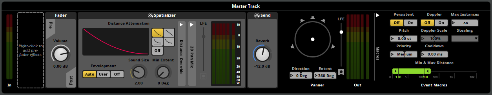
The signal chain flows from left to right in the deck. An effect alters the audio passing through it and passes the audio down the chain. After the last effect the signal will route out to whichever bus it is routed to. Those buses may also have their own effects and signal chains to consider.
Please see the group buses and routing section for more information.
Effects are modular units that alter the audio signal passed through them in real-time. It is always important to take the signal chain into consideration when adding effects. For example, look at the follow signal chain:
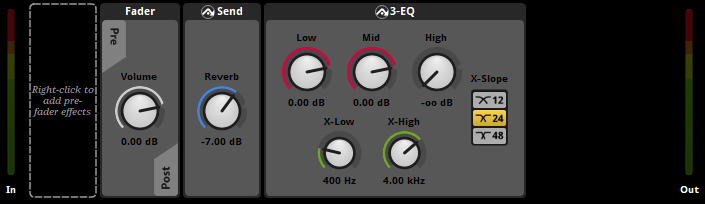
In the above example, the audio signal is coming into the left end of the deck. There are no effects in the pre-fader so it passes through the track's volume fader and out to post-fader.
The signal is first being duplicated and sent off to the "Reverb" return bus by the send. The audio signal sent to the return bus is not affected by any effects placed after the send on this signal chain.
Next, the still dry signal is being processed through the 3-EQ effect, removing all of the high end of the signal.
The result is a dry reverb sound (output from the "Reverb" return bus) accompanied by the original signal with a low-pass filter (output from the event master track).
Altering the signal chain can dramatically affect the output. Switching the 3-EQ and the send effects will result in the reverb also having all the high ends removed from the signal.
Effects may be bypassed. Bypassed effects continue to upmix or downmix the channel format as usual, but do not otherwise alter the signal. To bypass an effect or make an effect no longer bypassed, right-click on the effect and select "Bypass" from the context menu.
For more information on each effect available, please see the effects reference section.
The slider that appears on channel strips can be changed to represent nearly any property of nearly any effect. To do this, right-click on the property you want to display, and select "Flip to Faders" from the context menu. This affects the slider of every channel strip whose signal chain includes that property to represent that property. Once you have done this, you can toggle the sliders between representing that property and representing bus volume by clicking the "Flip" button on the master bus.
9.9 Snapshots and the Tracks View
Snapshots are sets of values for bus properties that can be applied to your game's mix on the fly, allowing your game to change its mix as it runs.
You can change which properties a snapshot affects by 'scoping in' and 'scoping out' individual properties until you have a list that suits your purpose. A snapshot has no effect on properties outside of its scope. This means that snapshots that affect different sets of properties do not interfere with each other.
When your game plays a snapshot, the property values specified in the snapshot are applied to the properties in the snapshot's scope: An overriding snapshot overrides the property values specified in the mixer with the values of the properties scoped into the snapshot; whereas a blending snapshot's bus volume property values are added to the property values specified in the mixer, while its other property values override the property values specified in the mixer.
For example, a common use of snapshots is to reduce the volume of non-dialog channels during in-game conversations. This could be achieved by using a snapshot whose scope includes the volume properties of the buses that need to be ducked. Because this snapshot does not affect any other properties in the project, it never changes those other properties, nor does it clash with other snapshots that do change them.
Snapshots are instanced and played in the same manner as events, and multiple snapshot instances can play concurrently, regardless whether they're instances of the same snapshot or of different snapshots. It is also possible to set up transitions between snapshots.
Snapshots only affect the properties in their scope as long as they continue playing. When all instances of a snapshot end, the properties affected by that snapshot return to their normal values.
9.9.1 Triggering Snapshots
A snapshot can be triggered in two ways: By your game's code, and by a snapshot instrument.
Triggering a snapshot from code is the more common of the two methods. Snapshots are a kind of event, so triggering a snapshot from code is very similar to triggering an event. For example, in Unity 3D, the following code would create an instance of a snapshot named "IngamePause":
EventInstance inGamePause = FMODUnity.RuntimeManager.CreateInstance("snapshot:/IngamePause");
inGamePause.start();
Snapshots can also be triggered by events. Adding a snapshot to a parameter sheet in an event creates a snapshot instrument. When the playback position enters a snapshot instrument, that instrument is triggered, which causes a new instance of the corresponding snapshot to begin playing. When the playback position leaves the snapshot instrument, the instrument is untriggered, and the corresponding snapshot instance stops.
It is possible to rename and adjust the properties of snapshot instruments independently of each other and of the snapshot. Because of this, we recommend you name your snapshots and associated trigger regions carefully to avoid confusion.
9.9.2 Overriding versus Blending Snapshots
Multiple snapshots can affect the same property, and multiple instances of a single snapshot can be active at the same time. When multiple snapshot instances are active, the effect they have on the mix is determined by their behavior, priority, and grouping.
This explanation has been simplified by not taking into account snapshot intensity. In cases where the intensity of a snapshot is less than 100%, the behavior is slightly more complicated.
Behavior
There are two types of snapshots: Overriding snapshots and blending snapshots. For overriding snapshots, all scoped in properties override the underlying values. For blended snapshots, any changes to volume properties that range from -∞ to 10 dB are applied additively, while other property changes override their underlying values.
| Examples | Overriding Snapshot | Blending Snapshot | |
|---|---|---|---|
| Volume Property that can range from -∞ to 10 dB | Bus volume Send level Gain property of a gain effect Wet level property of a reverb effect |
Overriding | Additive |
| Other Property | Bus pitch Channel property of a transceiver effect Gain property of a compressor effect Low gain property of a reverb effect |
Overriding | Overriding |

As such, a blending snapshot is useful for doing relative volume changes. For example, you might setup overriding snapshots for each level in your game, then use a blending snapshot to apply a -2dB relative change to the ambience bus when an explosion occurs.
Priority
When multiple snapshots are active, they are evaluated in the order defined by a snapshot's priority. This is determined by the ordering in the snapshots browser.
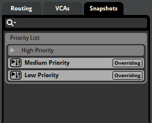
For example, if a high priority and low priority snapshot are both activated, the low priority snapshot's values are applied first (stomping out values from the baseline mix), then the high priority snapshot's values are again applied on top of that (stomping out values from the low priority snapshot mix). When there is no overlap, all properties are applied with no interference.

This is where modifying a snapshot's scope can be useful. Because the priority of combining snapshots is ordered, you can scope in or out elements within a given snapshot. This means that the snapshot will not apply changes to that particular property. For example, you may want the PauseMenu snapshot to lower the music volume, but maintain the volume changes to ambience that are currently active.
Snapshots in the same group are considered to be of equal priority, and are averaged together to get the net values that they should apply to the mix.
If a low-priority snapshot with a volume ranging from -∞ to 10 dB is set to -∞ dB, blending snapshots of higher priority cannot boost that property back to audibility. This is because a signal set to -∞ dB is treated as having zero amplitude, and so has no signal to boost.
In a project that uses source control, a checkmark icon appears on the priority list if the priority order has been changed.
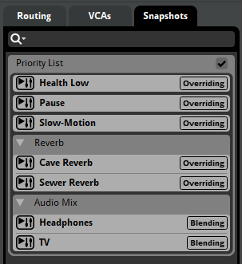
Grouping
Snapshot groups provide you with a way to specify that certain snapshots are of equal priority.
To create a snapshot group, right click on an empty space in the snapshots browser and select "New Group".
When multiple snapshots from the same group are enabled, their effects will be averaged together, before being applied as if they were part of a single snapshot. This can be used in various situations where no prioritization should occur. For example, you may want to create a group for snapshots that change reverb settings, based on proximity to trigger regions in a level. Using a group, along with AHDSR modulator on the intensity (see below), would allow for a smooth transition between the reverb states.
Groups also provide a way in which you can organize mutually exclusive snapshots. For example, you may want to group all cutscene snapshots, even if you're only planning to have one cutscene active at any given moment.
9.9.3 Snapshot Intensity
A snapshot's intensity is the "mix" between the property values specified in a snapshot and those that would be in place were the snapshot not active.
The intensity of a snapshot is visible in the deck when selecting a snapshot trigger region in the event editor.
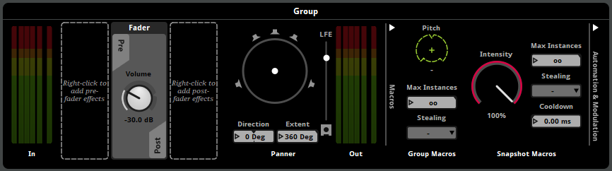
The above screenshot shows the snapshot's intensity dial located on the right hand side of the deck.
As the intensity property is increased, the more the properties' values are blended to those of the snapshot. So an intensity value of 0% results in none of the snapshot being applied, where as a value of 50% is an equal mix of both the current values and the snapshot values. It can be thought of as a wet/dry mix dial.
The snapshot intensity property multiplies with the intensity applied by snapshot trigger regions when the snapshot is applied.
When a snapshot is triggered, the intensity will immediately be applied. If you wish the snapshot to smoothly fade in and out when triggering and untriggering, it is recommended to apply an AHDSR modulator to the intensity property located on the right hand side of the deck.
When multiple instances of the same snapshot are simultaneously active, their intensities are averaged to determine the intensity with which the snapshot is applied to the mix.
9.9.4 The Tracks View
A snapshot can be displayed in either the strips view or the tracks view.
The tracks view for snapshots includes a parameter sheet for the snapshot's timeline. It can also have parameter sheets for the snapshot's other parameters, and supports the creation of automation tracks and their relevant functionality.
Using parameters in a snapshot is optional, but they can significantly extend what a snapshot can do.
Snapshots behave almost identically to events. When a snapshot begins playing, the timeline's playback position begins to advance and will follow any logic markers, loop regions, and transition markers it encounters. Parameters, automation, and modulation can be added to snapshots in the same manner as to events. The only difference is that no assets can be placed onto a snapshot's timeline.
Only bus properties that have been scoped in to a snapshot can be automated or modulated in that snapshot.
It is also possible to automate and modulate a snapshot's intensity. If an AHDSR modulator is applied to the snapshot's intensity, it can assist in smoothly fading the snapshot in and out when the snapshot is started and stopped.
9.10 Channel Formats
A channel is a single pathway for a mono audio signal. The subchannels of an audio file or effect can potentially use these channels. A specific number of channels and assumed speaker configuration is known as a channel format.
It is important to be careful with choosing channel formats to optimize performance for the hardware you are deploying your game to. The more channels being used, the more processing power is required from the hardware. For example, this can be crucial when running FMOD on low end hardware such as mobile devices or handheld consoles which won't require surround sound features.
FMOD Studio allows you to build your project towards the following speaker configurations:
| Speaker Configuration | Description | Graphical Depiction |
|---|---|---|
| Mono | One speaker (no panning is be applied to this signal, panning can occur later) | 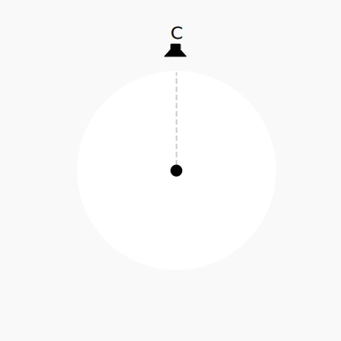 |
| Stereo | Two speakers | 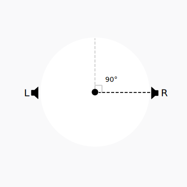 |
| Surround 4.0 | Four speakers | 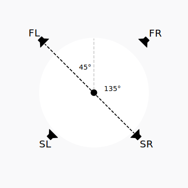 |
| Surround 5.0 | Five speakers | 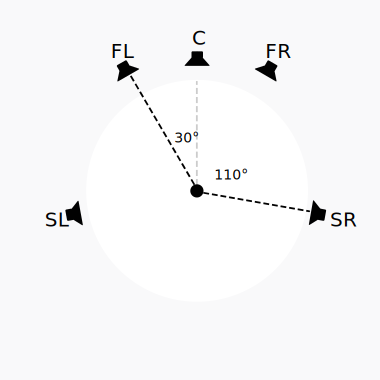 |
| Surround 5.1 | Five speakers and one Low Frequency Effects (LFE) |  |
| Surround 7.1 | Seven speakers and one LFE | 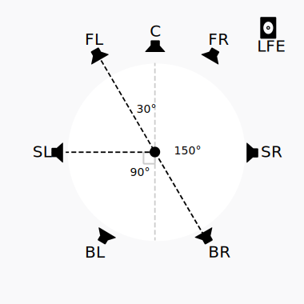 |
| Surround 7.1.4 | Seven speakers, one LFE, and four speakers on the ceiling | 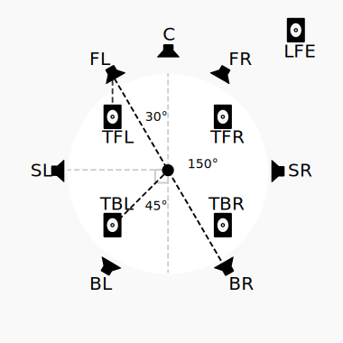 |
The channel format specified in the build tab of the preferences dialog is the one used by spatializers. Not all assets, buses, or tracks need to use this format. This is to support 2D music and non-diegetic sound effects alongside 3D sound.
The channel format chosen for your game may or may not match the speaker configuration that the user is using. In these circumstances, the FMOD Core API detects the output capabilities of the hardware it is running on and automatically up mixes or down mixes to match that configuration. This way, if you set your FMOD Studio project to be 5.1 Surround but the player only has stereo speakers, FMOD automatically maps the outputs to the two available speakers.
To the left and right ends of the deck are the input and output of the given track or bus, labeled as "In" and "Out". These give you a visual representation of all speakers being used in that track.
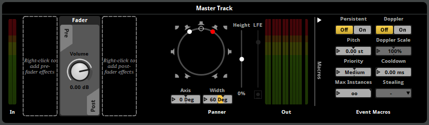
By default the channel format for a track is automatically dictated by the assets, instruments, or effects used.
When you place a spatializer effect into the deck, this automatically sets the channel format to your build settings' surround sound format at that point in the signal chain.
9.10.1 Changing Channel Formats
It is possible to force the channel format of individual tracks and buses by right clicking on the In or Out meters. You are able to choose any of the aforementioned configurations as well as "Automatic", or "Platform" (which sets the channel format to match the builds section of the preferences dialog for the selected platform).
By default, every track's input and output channel format is set to "Automatic". This means that the input and output channel formats are automatically set based on the media and effects used in that track. Spatializers have output channel formats that are based on the project's surround speaker mode, the channel mix and convolution reverb (when using a multi-channel IR file) can have output formats that differ from their input, and assets can be rendered with any number of channels as needed.
You can also change the channel format of the master bus in the mixer, which otherwise uses the platform's channel format specified in the surround speaker mode option in the preferences dialog.
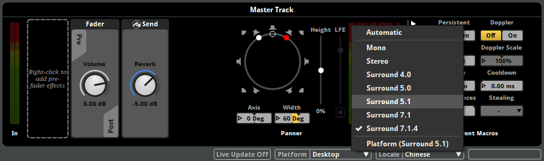
The channel format of a bus or track set to use the "Automatic" format depends on the formats of the instruments and tracks or buses routed into it. Choosing "Platform" forces the channel format to match the platform's channel format specified in the surround speaker mode option in preferences dialog, otherwise "Automatic" chooses the format with the most channels.
Also note for the panner, if the output format is "Automatic", FMOD Studio uses the stereo pan mode if the effective output format is stereo. If the output format is "Platform", FMOD Studio uses the surround pan mode.
9.10.2 Metering Channel Order
The metering for the input and output of a track or bus shows you the volume going in and out of each individual channel.
In the preferences dialog you are able to change the order in which the meters appear in the deck. Changing the settings here only alters how the metering is displayed in FMOD Studio and does not affect the project or any audio being produced or built.
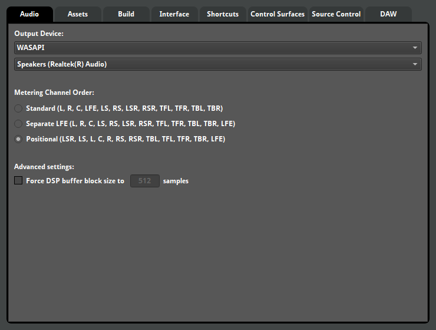
You can see below a list of what each acronym means:
| Interface Element | Speaker |
|---|---|
| L | Left |
| R | Right |
| C | Center |
| LFE | Low Frequency Effects (subwoofer) |
| LS | Left Surround |
| RS | Right Surround |
| LSR | Left Surround Rear |
| RSR | Right Surround Rear |
| TFL | Top Front Left |
| TFR | Top Front Right |
| TBL | Top Back Left |
| TBR | Top Back Right |
9.11 The Panner
If a track or bus is set to stereo or a higher speaker configuration, to the right end of the deck of that track or bus is the panner.

The panner allows you to pan the output of the track or bus between the available speakers. A stereo panner appears if the bus or track's output channel format is set to stereo, and allows you to pan between left (L) and right (R) using a dial. Surround 4.0 and a higher output channel formats instead cause the deck to display a surround panner that lets you pan between all available speakers by clicking and dragging a dot.
If a track or bus has surround output channel format, but its input channel format is stereo, its surround panner has two possible modes for converting the stereo signal to surround. In "Stereo In: Distributed" mode, the surround panner behaves as if the output channel format is surround 4.0 or higher. In "Stereo In: L/R" mode, the white dot represents the left speaker and the red dot represents the right speaker. Moving the empty circle pans the sound, and moving the red or white dots adjusts the stereo width (how far apart the Left and Right speakers are). To switch between these two modes, right click on the panner and select your choice from the context menu.
You are able to further customize the output of the track or bus by disabling individual speakers on a surround panner. Clicking on a white speaker on the surround panner will disable it and turn the icon grey. These settings will be built into the banks so be careful if you are disabling speakers when auditioning.
When using 5.1, 7.1, or 7.1.4, the LFE slider (and height slider, when using 7.1.4) appears to the right of the panner. The LFE slider controls the volume being sent to the LFE (subwoofer), whereas the height slider controls the perceived height of the 4 ceiling speakers. You are able to disable the LFE by clicking on the white icon below the slider.
The 4 "height" channels are represented as the four corner speakers on the surround panner. Height is set between -100% and +100%. Setting the height control to 100% takes any incoming signal and pushes it into the 4 ceiling speakers. If the player is using headphones (for example, with Windows Sonic for Headphones or Dolby Atmos for Headphones) they will hear an approximation of ceiling speakers. Platforms that do not support the ceiling speaker channels have those channels removed from the mix.
For information on auditioning 7.1.4 format sound in FMOD Studio, see the Auditioning Object Spatialization and Height Panning section of the Advanced Topics chapter.